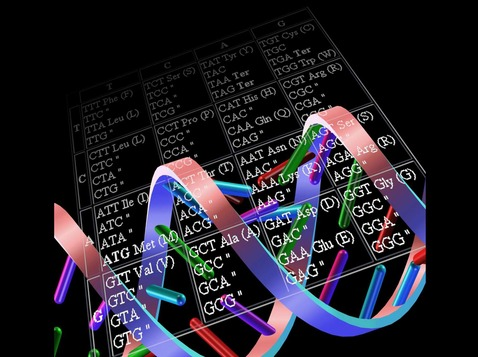
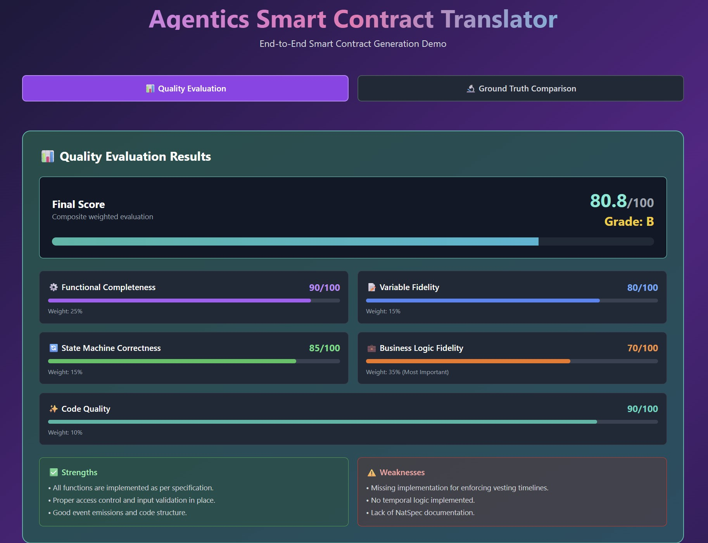
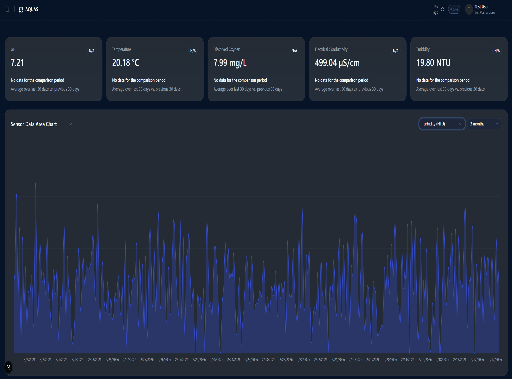
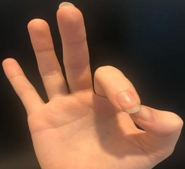
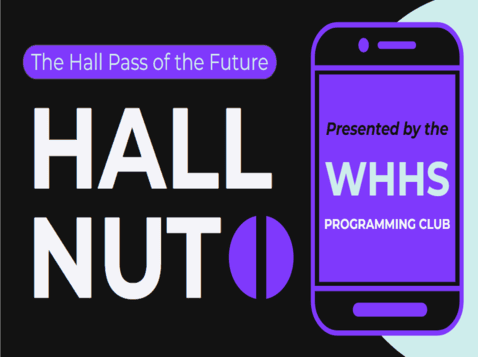
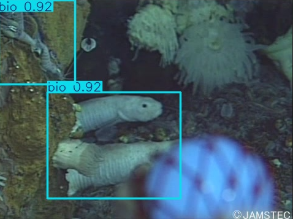
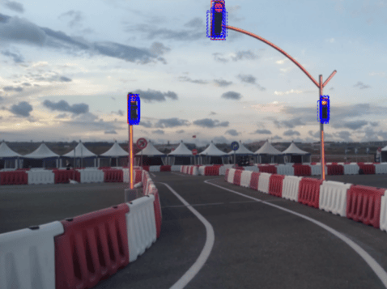
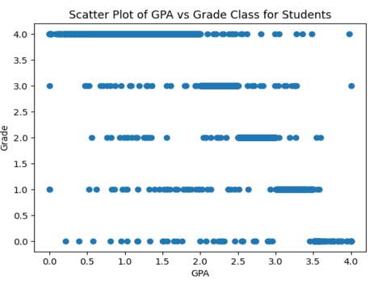
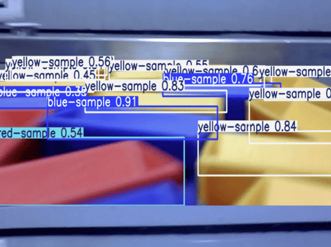
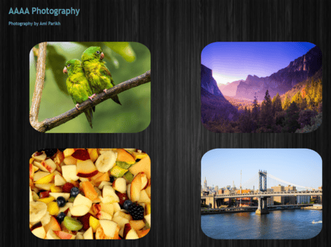

Conducting research on RNA Sequence relation using unsupervised Contrastive Learning frameworks. The frameworks aim to bring positive embeddings (related sequences) closer together and push negative embeddings (unrelated sequences) farther apart within contrastive space. Additionally, conducting research on isoform quantification within RNA samples using a Bayesian hierarchical model evaluating both short-read and long-read sequences.
Agentic AI Research - Smart Contracts

Invoking AI Agents to interact with smart contracts - digital self-executing contracts stored on blockchain that can be automatically run when conditions are met, removing the need for a third-party intermediary (lawyer). Creating a multi-agent framework and implementing LLMs to automate natural language to Solidity conversion and endpoint execution. Utilizing FastMCP servers, Pydantic Schemas, transduction, and agentics.
AQUAS Dashboard

AQUAS is a robotics team at Columbia University focused on creating an autonomous robot to detect and treat algal blooms in water bodies. Currently devloping a full-stack data dashboard for displaying robot telemetry, visualizations, and key statistics (data sent from robot sensors). Dashboard consists of an authentication system, Postgresql queries, Fast API endpoints, useful visualizations, and clean design.

Developed a real-time American Sign Language (ASL) translator using the MobileNetV2 model. Used MediaPipe, TKinter, and OpenCV for real-time hand detection. The model is able to convert hand gestures into both spoken and written English, enabling sentence construction. Pre-processed data by one-hot encoding letter classes and resizing the photos appropriately for the model. User can add and delete letters to create words and pytttsx3 is used to vocalize completed words.
Virtual Hall Pass (WHHS Programming Club)

Built and deployed a secure, role-based virtual hall pass system for Walnut Hills High School using Flask, PostgreSQL, and Firebase authentication to manage admin and student logins. Implemented real-time monitoring and analytics dashboards to track hallway activity and pass usage, reducing manual tracking workload by ~80%. The project placed 1st at the University of Cincinnati IT Expo for innovation in digital school management.

Conducted individual research on the optimization of underwater trash detection models. Developed three individual object detection/image classification ML models (Yolov8, Faster-RCNN, custom CNN) and engineered a custom underwater image enhacement algorithm. Compared and analyzed results from the three models in a 20-page research paper.

Acquired data from AV Traffic Sign Detection dataset on Kaggle. Pre-processed data by scaling images to adequate dimensions and mounting them to Google Collab via Google Drive. Used Faster-RCNN to train, validate, and test model. Experimented with learning rate, epochs, batch size, kernels, and strides to acquire best performance. Goal of project was to successfully classify and detect 18 distinct traffic signs on the road.

Created a neural network that used Batch Normalization, ReLU activation, and Softmax to predict the "rating" of a student given the student's grades, extracurriculars, volunteer activities, and parental history. One-hot encoded features so model could train on data. Grade "0" represented best student rating and grade "4" represented the worst student rating. Neural network model achieved 98% accuracy on test data after hyperparameter tuning.
FTC Sample Detection

Designed and optimized a YOLOv8 object detection model to identify and classify FTC Into the Deep game elements based on color, shape, and orientation, achieving 88% detection accuracy. Integrated model outputs into the robot’s autonomous control pipeline to enhance navigation, game element handling, and decision-making efficiency during competition.

Developed website for Ami Parikh's photography (AAAA Photography). Organized albums into 6 categories: wildlife, food, portraits, landscapes, urban, and landmarks. Implemented linear animations using keyframes and maintained flexbox and grid-like structure throughout website. Media queries were developed for the website to be observable on any device.